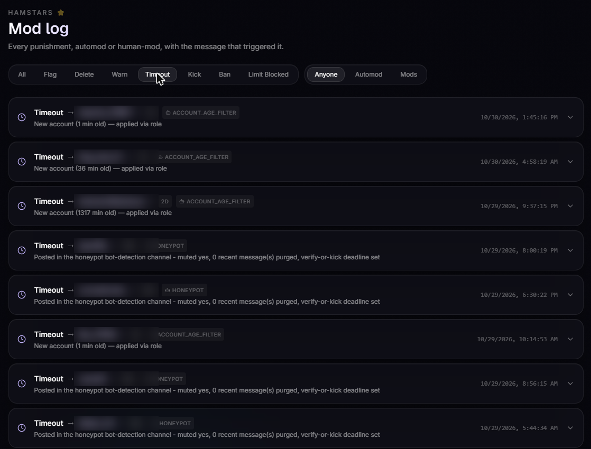
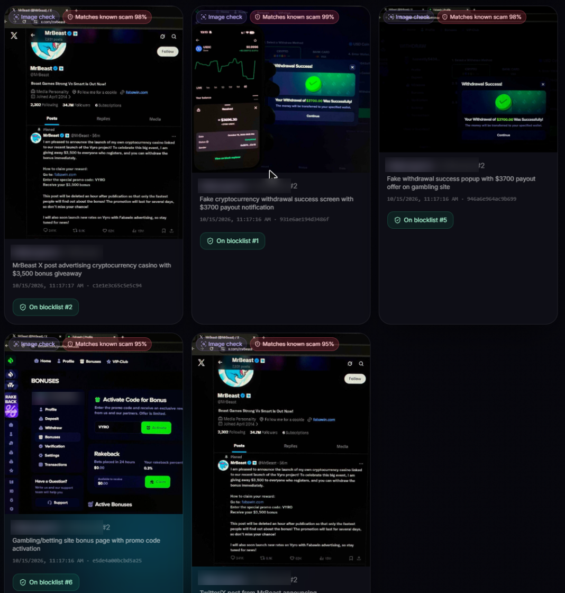

Screenshots from the Hamster Hunter bot's moderator dashboard for the Hamstars Discord server. Member usernames are blurred.
When a member joins, the bot checks the account's age. Accounts made minutes before joining get a restricted role (shown as ACCOUNT_AGE_FILTER). Members who post in the bot-detection channel are muted and must verify or be removed (HONEYPOT); the leave event clears their pending check.

A scam account posted a fake MrBeast cryptocurrency-casino promotion and fake "withdrawal success" screenshots across several channels on 15 October 2026. The bot's image check flagged each one as a known scam (95–99%), deleted it, and matched re-posts against the image blocklist. Discord's AutoMod can't check images, so this needs the attachments that Message Content provides.
